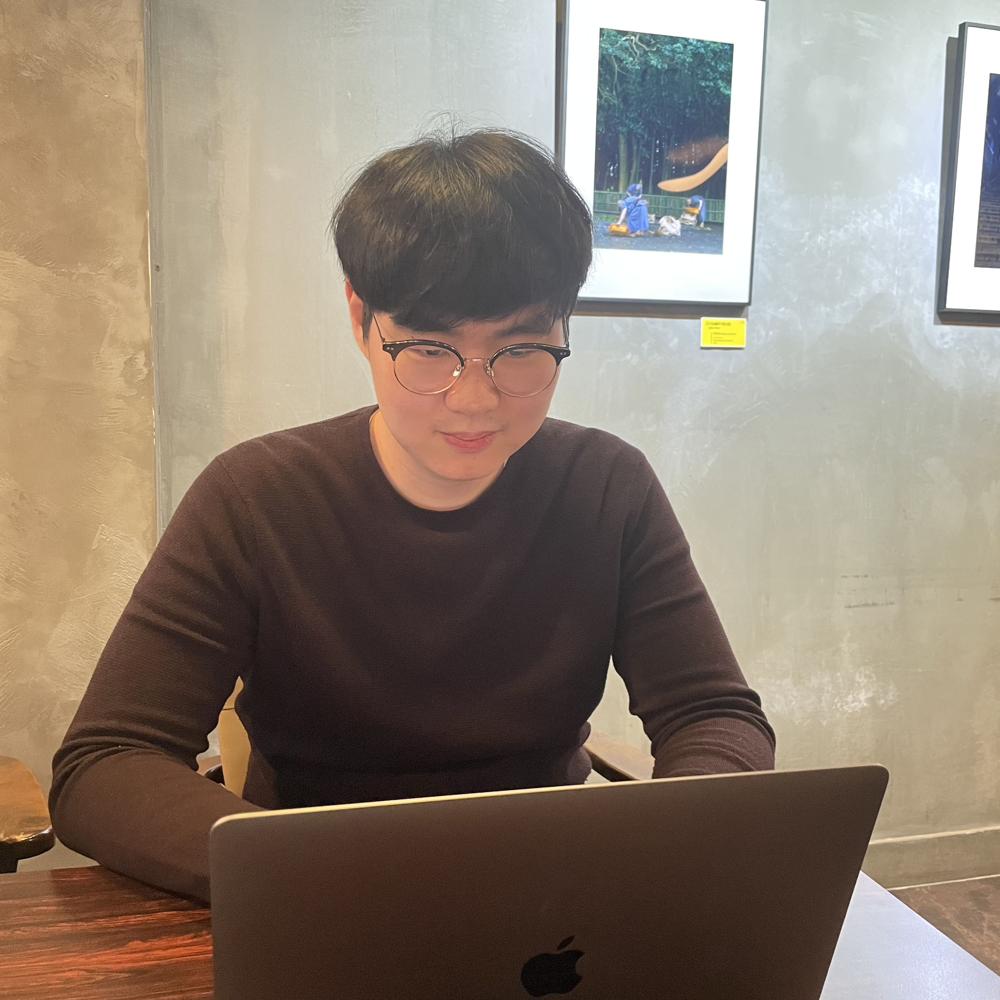

이동규(Donggyu Lee)
Web Developer / Designer
- 대전광역시 중구(Jung-gu, Daejeon, Republic of Korea)
- (000) 000-0000
- ehdrb141@gmail.com
- LEE-Donggyu.github.io
- @twitter-screen-name
- Introduce:
-
안녕하세요, 이동규입니다. 저는 컴퓨터공학을 전공했으며, 6개월간 빅데이터 분석관련 일을 했습니다. 현재 풀스택 개발자가 되기 위해 공부하고 있습니다. 웹 디자인과 백엔드에 자신은 없지만, 열심히 공부해서 한 단계씩 발전하는 모습 보여드리겠습니다.
Hi, I am Lee. I majored in computer science, worked in big-data analysis for 6 months. Currently I am studing to become a full stack developer. I'm not good at web design and back-end, but I'll show you how to develop step by step.
- Learned:
-
- HTML
- JavaScript
- CSS
- Java
- PHP
- C
- R
- Python
- MySQL
- Experience
&Project: -
빅데이터 분석(Big Data Analysis)
Dajeon City Hall
2021년 9월 - 2022년 2월(September 2021 - February 2022)
1. 대전광역시 민원 데이터 분석(Analysis of Civil Service Data in Daejeon)
2. 2021 지역문제 공동대응을 위한 빅데이터 분석보고서 작성(Preparation of Big Data Analysis Report for Joint Response to Regional Issues in 2021)
3. 프로그래밍을 이용한 통계 업무(Statistical work using programming)
- Publications:
-
1. 2021 지역문제 공동대응을 위한 빅데이터 분석보고서
2. 제60회 대전통계연보
- Education:
-
한남대학교(Hannam University)
대전광역시 대덕구 한남로 70 (오정동, 한남대학교)
70, Hannam-ro, Daedeok-gu, Daejeon, Republic of Korea
2017년 3월 - 2023년 8월(March 2017 - August 2023)
2021년 공공빅데이터 분석 청년인재 양성사업
2021 Public Big Data Analysis Youth Talent Training Project2021년 7월 - 2022년 2월(July 2021 - February 2022)
9roomthon TRAINING 풀스택 개발자 양성 과정 1기
9roomthon TRAINING Full Stack Developer Training Course 1st Stage2023년 5월 - 2023년 11월(May 2023 - November 2023)
- Certificate:
-
정보처리기사 필기 합격
Pass the written test of the Engineer Inforamtion Processing2023년 7월(July 2023)